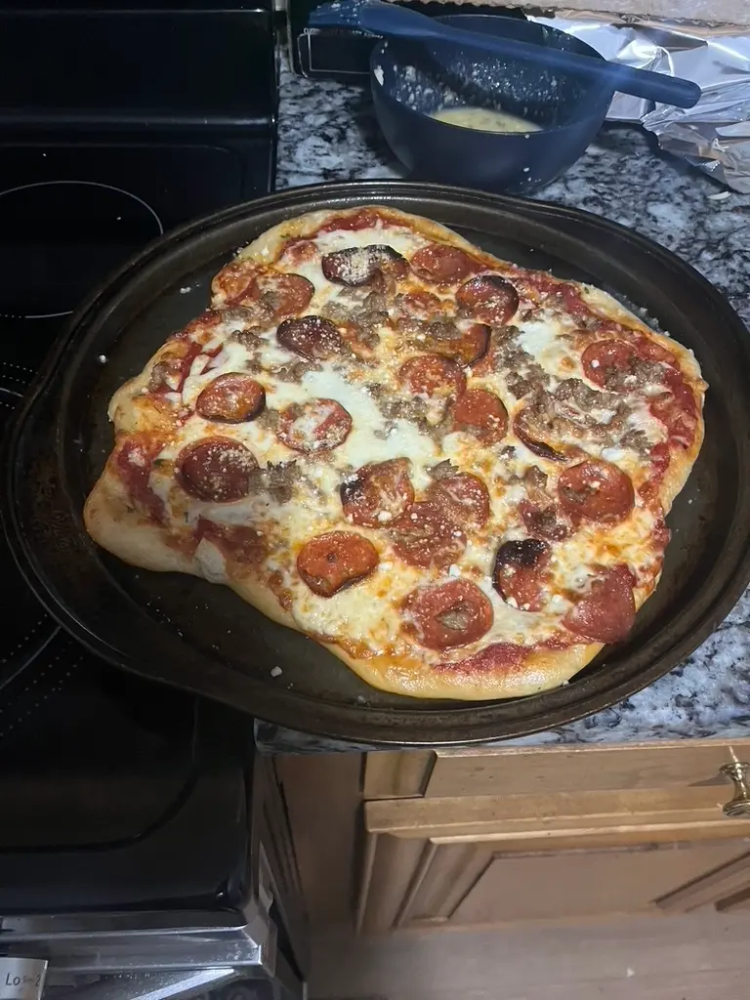
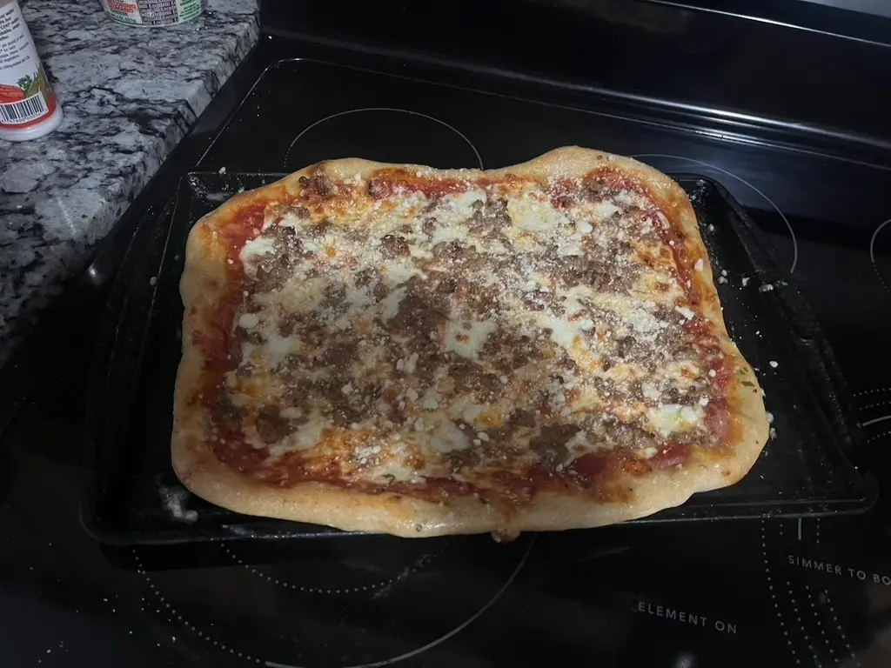
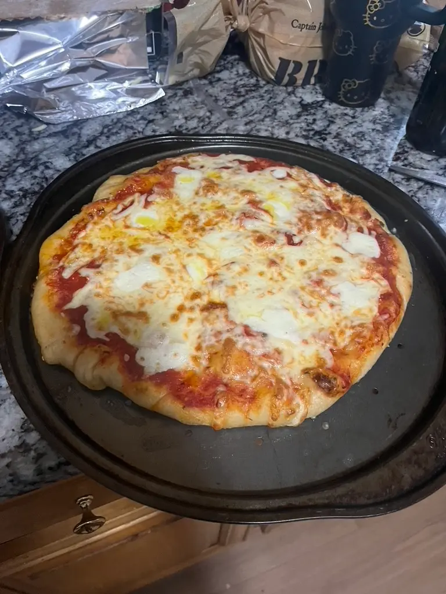

I may be biased, but I believe that my favorite pizzas are the ones we make at home.
| Prep Time | Bake Time | Servings |
|---|---|---|
| 30 mins | 40 mins | 4 |
Ingredients
- 4 pizza doughs (I used four premade ones from the store, but you are free to make your own)
- 15 oz of tomato sauce
- 16 oz block of mozzarella cheese
- l6 oz block of Monterrey Jack cheese
- 8 oz of pepperonis
- 16 oz of Italian sausage
- 1 tsp salt
- 1 tsp pepper
- 2 tbsp garlic paste
- 2 tbsp basil paste
- 3 tbsp olive oil
- Parmesan as a garnish
Tools
- A pizza steel.
- A peel (metal or wooden) to move the pizzas.
- Parchment paper
Instructions
- Preheat your oven to 480 degrees with your pizza steel inside.
- In a bowl, shred both of your cheeses and combine them. You can use a regular cheese grater or an electric cheese grater.
- Cook your Italian sausage in a pan until it is brown.
- Make the pizza sauce by combining your tomato sauce, garlic paste, basil paste, salt, pepper and some olive oil.
- If you got premade pizza doughs like me, put them on parchment paper on the peel. Then, roll or stretch them out until they look like a circle or rectangle.
- While not mandatory, it would be wise to poke holes in them with a fork.
- Place your sauce and cheese on your pizza with your toppings.
- Using the pizza peel, put your pizza (still on the parchment paper) in the oven on the steel for 3 minutes. Then, take it off the parchment paper and bake for another 7 minutes.
- Take out your pizza and garnish with parmesan cheese.